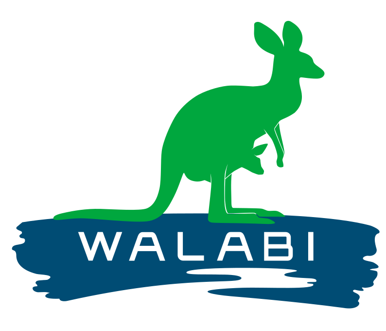

<header class="site-header">
    <div class="container">
        <div class="logo-container">
            <a href="index.html" class="logo">
                
            </a>
        </div>

        <nav class="main-nav">
            <button class="mobile-menu-toggle" aria-label="Toggle menu">
                <span></span>
                <span></span>
                <span></span>
            </button>

            <ul class="nav-menu">
                <li class="menu-item"><a href="index.html#about-section" id="menu-about-en">About</a><a href="index.html#about-section" id="menu-about-nl" class="hidden">Over ons</a></li>
                <li class="menu-item has-submenu">
                    <a href="index.html#themes-section" id="menu-themes-en">Themes</a>
                    <a href="index.html#themes-section" id="menu-themes-nl" class="hidden">Thema's</a>
                    <ul class="submenu">
                        <li><a href="index.html#theme1" data-theme="1" id="submenu-theme1-en">Business Architecture</a><a href="#theme1" data-theme="1" id="submenu-theme1-nl" class="hidden">Bedrijfsarchitectuur</a></li>
                        <li><a href="index.html#theme2" data-theme="2" id="submenu-theme2-en">Digital Transformation</a><a href="#theme2" data-theme="2" id="submenu-theme2-nl" class="hidden">Digitale Transformatie</a></li>
                        <li><a href="index.html#theme3" data-theme="3" id="submenu-theme3-en">Digital Trends Exploration</a><a href="#theme3" data-theme="3" id="submenu-theme3-nl" class="hidden">Verkenning Digitale Trends</a></li>
                        <li><a href="index.html#theme4" data-theme="4" id="submenu-theme4-en">Interoperability and Data Sharing Infrastructures</a><a href="#theme4" data-theme="4" id="submenu-theme4-nl" class="hidden">Interoperabiliteit en Data-uitwisselingsinfrastructuren</a></li>
                        <li><a href="index.html#theme5" data-theme="5" id="submenu-theme5-en">Smart Business Information Systems</a><a href="#theme5" data-theme="5" id="submenu-theme5-nl" class="hidden">Slimme Bedrijfsinformatiesystemen</a></li>
                    </ul>
                </li>
                <li class="menu-item"><a href="index.html#track-record-section" id="menu-track-record-en">Track Record</a><a href="#track-record-section" id="menu-track-record-nl" class="hidden">Resultaten</a></li>
                    <!-- Hier komt Academy -->
                <li class="menu-item">
                    <a href="https://walabi.eu/academy.html" id="menu-academy-en">Academy</a>
                    <a href="https://walabi.eu/academy.html" id="menu-academy-nl" class="hidden">Academie</a>
                </li>
                <li class="menu-item">
                    <div class="language-switch header-lang-switch">
                        <button class="active" onclick="switchLanguage('en')">EN</button>
                        <button onclick="switchLanguage('nl')">NL</button>
                    </div>
                </li>
            </ul>
        </nav>
    </div>
</header>